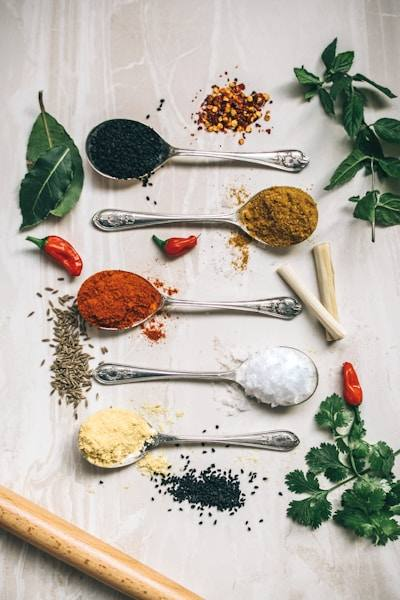

Як змінювалася кухня протягом віків

Існує багато способів термічної обробки: від класичного варіння до сучасного методу су-від. Кожен метод впливає на текстуру та смак страви. Дивіться Поради шеф-кухарів.
Детальніше про страви можна дізнатись у нашій Галереї.
Сучасна кухня вимагає суворого дотримання температурних режимів.
| Продукт | Безпечна t°C |
|---|---|
| Яловичина | 71°C |
| Свинина | 74°C |
| Птиця | 82°C |
| Риба | 63°C |
| Яйця | 71°C |